Compare the empirical distribution of the data y to the distributions of
simulated/replicated data yrep from the posterior predictive distribution.
See the Plot Descriptions section, below, for details.
Usage
ppc_data(y, yrep, group = NULL)
ppc_dens_overlay(
y,
yrep,
...,
size = 0.25,
alpha = 0.7,
trim = FALSE,
bw = "nrd0",
adjust = 1,
kernel = "gaussian",
bounds = NULL,
n_dens = 1024
)
ppc_dens_overlay_grouped(
y,
yrep,
group,
...,
size = 0.25,
alpha = 0.7,
trim = FALSE,
bw = "nrd0",
adjust = 1,
kernel = "gaussian",
bounds = NULL,
n_dens = 1024
)
ppc_ecdf_overlay(
y,
yrep,
...,
discrete = FALSE,
pad = TRUE,
size = 0.25,
alpha = 0.7
)
ppc_ecdf_overlay_grouped(
y,
yrep,
group,
...,
discrete = FALSE,
pad = TRUE,
size = 0.25,
alpha = 0.7
)
ppc_dens(y, yrep, ..., trim = FALSE, size = 0.5, alpha = 1, bounds = NULL)
ppc_hist(
y,
yrep,
...,
binwidth = NULL,
bins = NULL,
breaks = NULL,
freq = TRUE
)
ppc_freqpoly(
y,
yrep,
...,
binwidth = NULL,
bins = NULL,
freq = TRUE,
size = 0.5,
alpha = 1
)
ppc_freqpoly_grouped(
y,
yrep,
group,
...,
binwidth = NULL,
bins = NULL,
freq = TRUE,
size = 0.5,
alpha = 1
)
ppc_boxplot(y, yrep, ..., notch = TRUE, size = 0.5, alpha = 1)
ppc_dots(y, yrep, ..., binwidth = NA, quantiles = 100, freq = TRUE)
ppc_violin_grouped(
y,
yrep,
group,
...,
probs = c(0.1, 0.5, 0.9),
size = 1,
alpha = 1,
y_draw = c("violin", "points", "both"),
y_size = 1,
y_alpha = 1,
y_jitter = 0.1
)
ppc_pit_ecdf(
y,
yrep,
...,
pit = NULL,
K = NULL,
prob = 0.99,
plot_diff = FALSE,
interpolate_adj = NULL
)
ppc_pit_ecdf_grouped(
y,
yrep,
group,
...,
K = NULL,
pit = NULL,
prob = 0.99,
plot_diff = FALSE,
interpolate_adj = NULL
)Arguments
- y
A vector of observations. See Details.
- yrep
An
SbyNmatrix of draws from the posterior (or prior) predictive distribution. The number of rows,S, is the size of the posterior (or prior) sample used to generateyrep. The number of columns,Nis the number of predicted observations (length(y)). The columns ofyrepshould be in the same order as the data points inyfor the plots to make sense. See the Details and Plot Descriptions sections for additional advice specific to particular plots.- group
A grouping variable of the same length as
y. Will be coerced to factor if not already a factor. Each value ingroupis interpreted as the group level pertaining to the corresponding observation.- ...
For dot plots, optional additional arguments to pass to
ggdist::stat_dots().- size, alpha
Passed to the appropriate geom to control the appearance of the predictive distributions.
- trim
A logical scalar passed to
ggplot2::geom_density().- bw, adjust, kernel, n_dens, bounds
Optional arguments passed to
stats::density()(andboundstoggplot2::stat_density()) to override default kernel density estimation parameters or truncate the density support.n_densdefaults to1024.- discrete
For
ppc_ecdf_overlay(), should the data be treated as discrete? The default isFALSE, in which casegeom="line"is passed toggplot2::stat_ecdf(). Ifdiscreteis set toTRUEthengeom="step"is used.- pad
A logical scalar passed to
ggplot2::stat_ecdf().- binwidth
Passed to
ggplot2::geom_histogram()to override the default binwidth.- bins
Passed to
ggplot2::geom_histogram()to override the default binwidth.- breaks
Passed to
ggplot2::geom_histogram()as an alternative tobinwidth.- freq
For histograms,
freq=TRUE(the default) puts count on the y-axis. Settingfreq=FALSEputs density on the y-axis. (For many plots the y-axis text is off by default. To view the count or density labels on the y-axis see theyaxis_text()convenience function.)- notch
For the box plot, a logical scalar passed to
ggplot2::geom_boxplot(). Note: unlikegeom_boxplot(), the default isnotch=TRUE.- quantiles
For dot plots, an optional integer passed to
ggdist::stat_dots()specifying the number of quantiles to use for a quantile dot plot. IfquantilesisNAthen all data points are plotted. The default isquantiles=100so that each dot represent one percent of posterior mass.- probs
A numeric vector of probabilities controlling where quantile lines are drawn. Set to
NULLto remove the lines.- y_draw
For
ppc_violin_grouped(), a string specifying how to drawy:"violin"(default),"points"(jittered points), or"both".- y_jitter, y_size, y_alpha
For
ppc_violin_grouped(), ify_drawis"points"or"both"theny_size,y_alpha, andy_jitterare passed to to thesize,alpha, andwidtharguments ofggplot2::geom_jitter()to control the appearance ofypoints. The default ofy_jitter=NULLwill let ggplot2 determine the amount of jitter.- pit
An optional vector of probability integral transformed values for which the ECDF is to be drawn. If NULL, PIT values are computed to
ywith respect to the corresponding values inyrep.- K
An optional integer defining the number of equally spaced evaluation points for the PIT-ECDF. Reducing K when using
interpolate_adj = FALSEmakes computing the confidence bands faster. Forppc_pit_ecdfandppc_pit_ecdf_grouped, if PIT values are supplied, defaults tolength(pit), otherwise yrep determines the maximum accuracy of the estimated PIT values andKis set tomin(nrow(yrep) + 1, 1000). Formcmc_rank_ecdf, defaults to the number of iterations per chain inx.- prob
The desired simultaneous coverage level of the bands around the ECDF. A value in (0,1).
- plot_diff
A boolean defining whether to plot the difference between the observed PIT- ECDF and the theoretical expectation for uniform PIT values rather than plotting the regular ECDF. The default is
FALSE, but for large samples we recommend settingplot_diff=TRUEas the difference plot will visually show a more dynamic range.- interpolate_adj
A boolean defining if the simultaneous confidence bands should be interpolated based on precomputed values rather than computed exactly. Computing the bands may be computationally intensive and the approximation gives a fast method for assessing the ECDF trajectory. The default is to use interpolation if
Kis greater than 200.
Value
The plotting functions return a ggplot object that can be further
customized using the ggplot2 package. The functions with suffix
_data() return the data that would have been drawn by the plotting
function.
Details
For Binomial data, the plots may be more useful if the input contains the "success" proportions (not discrete "success" or "failure" counts).
Plot Descriptions
ppc_hist(), ppc_freqpoly(), ppc_dens(), ppc_boxplot()A separate histogram, shaded frequency polygon, smoothed kernel density estimate, or box and whiskers plot is displayed for
yand each dataset (row) inyrep. For these plotsyrepshould therefore contain only a small number of rows. See the Examples section.ppc_dots()A dot plot plot is displayed for
yand each dataset (row) inyrep. For these plotsyrepshould therefore contain only a small number of rows. See the Examples section. This function requires ggdist::stat_dots to be installed.ppc_freqpoly_grouped()A separate frequency polygon is plotted for each level of a grouping variable for
yand each dataset (row) inyrep. For this plotyrepshould therefore contain only a small number of rows. See the Examples section.ppc_ecdf_overlay(),ppc_dens_overlay(),ppc_ecdf_overlay_grouped(),ppc_dens_overlay_grouped()Kernel density or empirical CDF estimates of each dataset (row) in
yrepare overlaid, with the distribution ofyitself on top (and in a darker shade). When usingppc_ecdf_overlay()with discrete data, set thediscreteargument toTRUEfor better results. For an example ofppc_dens_overlay()also see Gabry et al. (2019).ppc_violin_grouped()The density estimate of
yrepwithin each level of a grouping variable is plotted as a violin with horizontal lines at notable quantiles.yis overlaid on the plot either as a violin, points, or both, depending on they_drawargument.ppc_pit_ecdf(),ppc_pit_ecdf_grouped()The PIT-ECDF of the empirical PIT values of
ycomputed with respect to the correspondingyrepvalues.100 * prob% central simultaneous confidence intervals are provided to asses ifyandyreporiginate from the same distribution. The PIT values can also be provided directly aspit. See Säilynoja et al. (2021) for more details.
References
Gabry, J. , Simpson, D. , Vehtari, A. , Betancourt, M. and Gelman, A. (2019), Visualization in Bayesian workflow. J. R. Stat. Soc. A, 182: 389-402. doi:10.1111/rssa.12378. (journal version, arXiv preprint, code on GitHub)
Säilynoja, T., Bürkner, P., Vehtari, A. (2021). Graphical Test for Discrete Uniformity and its Applications in Goodness of Fit Evaluation and Multiple Sample Comparison arXiv preprint.
Gelman, A., Carlin, J. B., Stern, H. S., Dunson, D. B., Vehtari, A., and Rubin, D. B. (2013). Bayesian Data Analysis. Chapman & Hall/CRC Press, London, third edition. (Ch. 6)
See also
Other PPCs:
PPC-censoring,
PPC-discrete,
PPC-errors,
PPC-intervals,
PPC-loo,
PPC-overview,
PPC-scatterplots,
PPC-test-statistics
Examples
color_scheme_set("brightblue")
y <- example_y_data()
yrep <- example_yrep_draws()
group <- example_group_data()
dim(yrep)
#> [1] 500 434
ppc_dens_overlay(y, yrep[1:25, ])
# \donttest{
# ppc_ecdf_overlay with continuous data (set discrete=TRUE if discrete data)
ppc_ecdf_overlay(y, yrep[sample(nrow(yrep), 25), ])
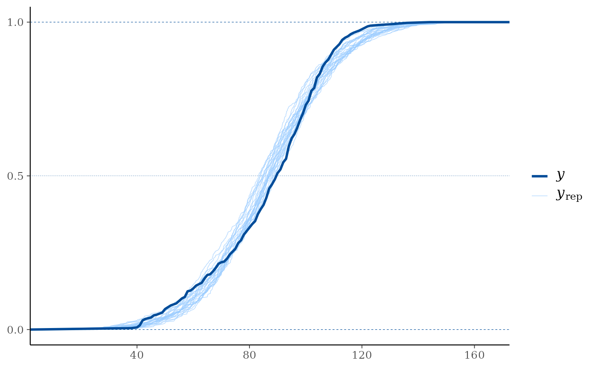
# PIT-ECDF and PIT-ECDF difference plot of the PIT values of y compared to
# yrep with 99% simultaneous confidence bands.
ppc_pit_ecdf(y, yrep, prob = 0.99, plot_diff = FALSE)
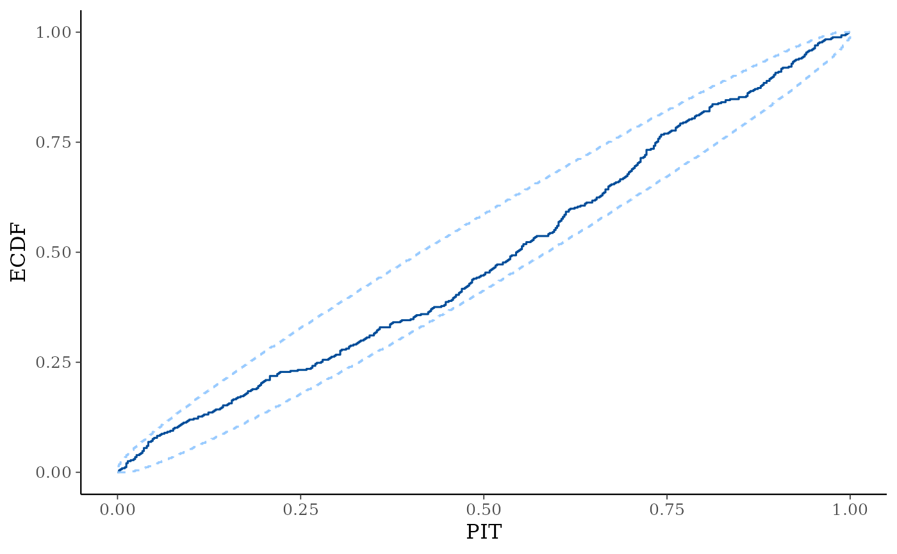
ppc_pit_ecdf(y, yrep, prob = 0.99, plot_diff = TRUE)
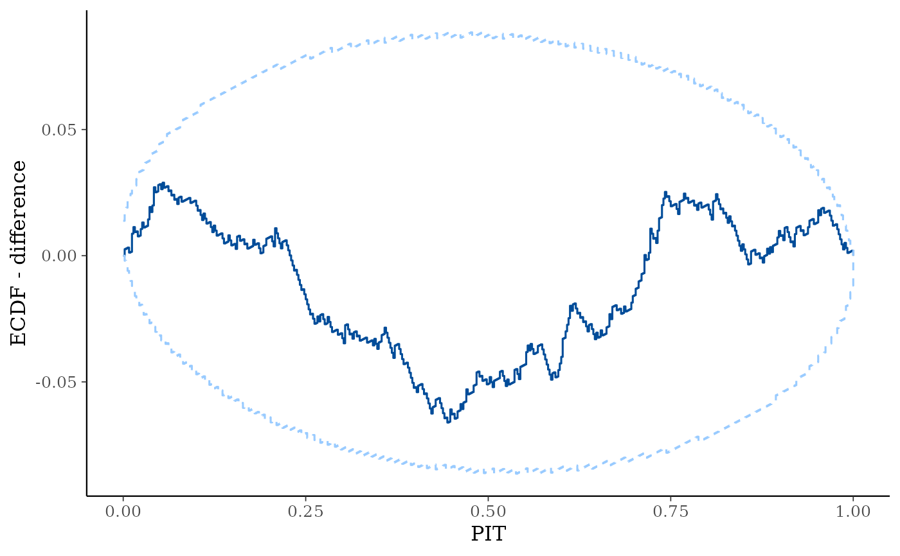
# }
# for ppc_hist,dens,freqpoly,boxplot,dots definitely use a subset yrep rows so
# only a few (instead of nrow(yrep)) histograms are plotted
ppc_hist(y, yrep[1:8, ])
#> `stat_bin()` using `bins = 30`. Pick better value `binwidth`.
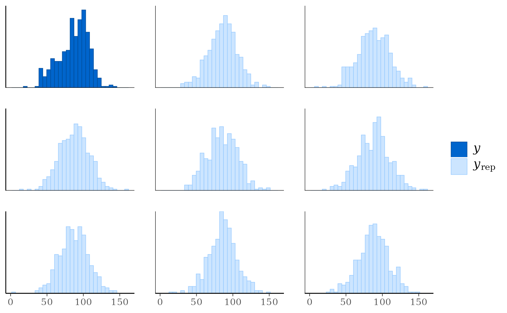
# \donttest{
color_scheme_set("red")
ppc_boxplot(y, yrep[1:8, ])
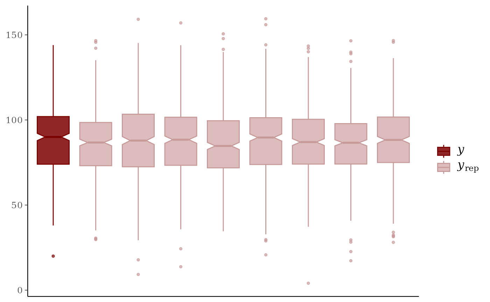
# wizard hat plot
color_scheme_set("blue")
ppc_dens(y, yrep[200:202, ])
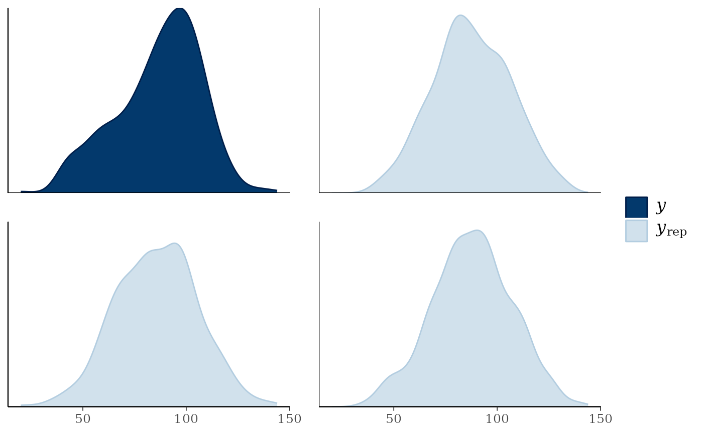
# dot plot
ppc_dots(y, yrep[1:8, ])
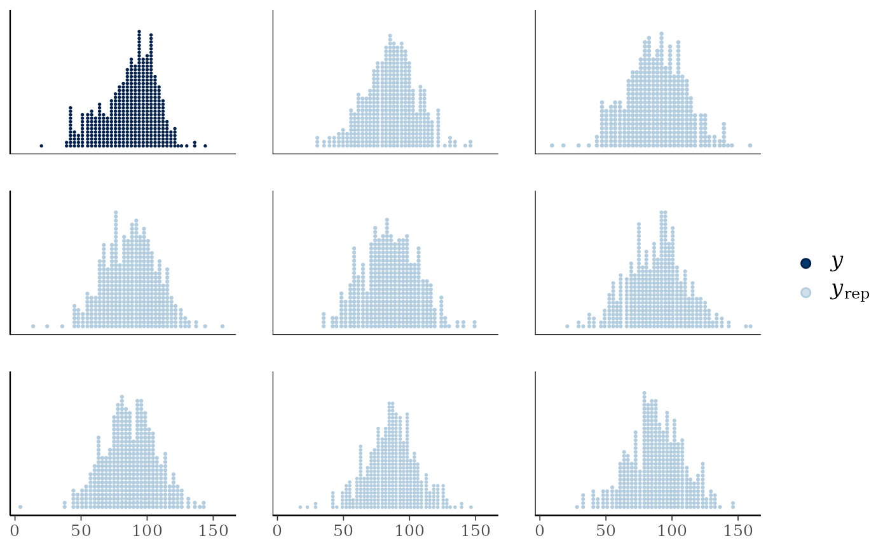
# }
# \donttest{
# frequency polygons
ppc_freqpoly(y, yrep[1:3, ], alpha = 0.1, size = 1, binwidth = 5)
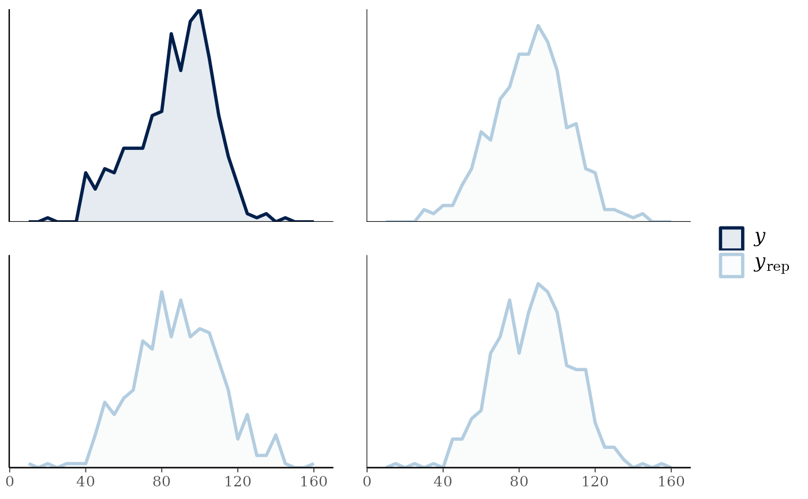
ppc_freqpoly_grouped(y, yrep[1:3, ], group) + yaxis_text()
#> `stat_bin()` using `bins = 30`. Pick better value `binwidth`.
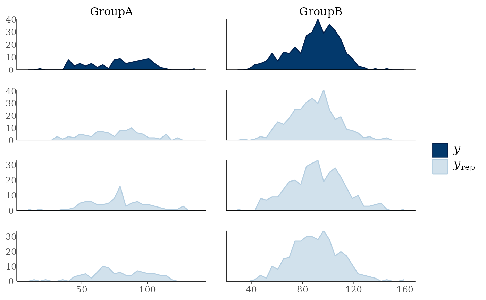
# if groups are different sizes then the 'freq' argument can be useful
ppc_freqpoly_grouped(y, yrep[1:3, ], group, freq = FALSE) + yaxis_text()
#> `stat_bin()` using `bins = 30`. Pick better value `binwidth`.
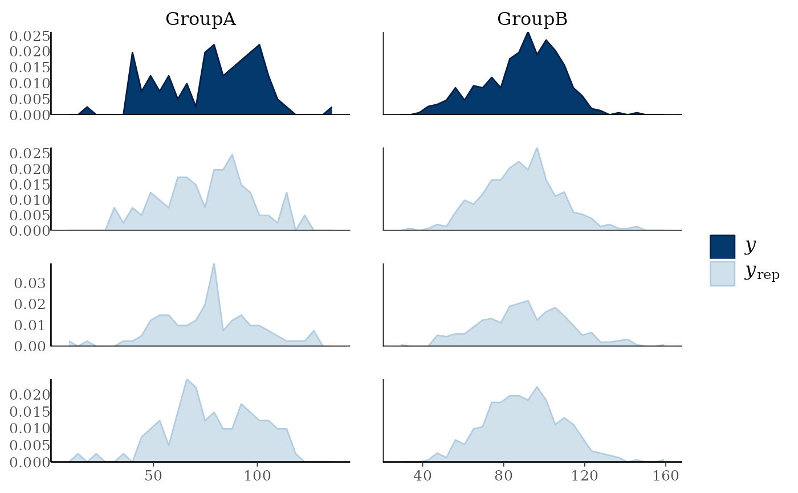
# }
# density and distribution overlays by group
ppc_dens_overlay_grouped(y, yrep[1:25, ], group = group)
ppc_ecdf_overlay_grouped(y, yrep[1:25, ], group = group)
 # \donttest{
# PIT-ECDF plots of the PIT values by group
# with 99% simultaneous confidence bands.
ppc_pit_ecdf_grouped(y, yrep, group=group, prob=0.99)
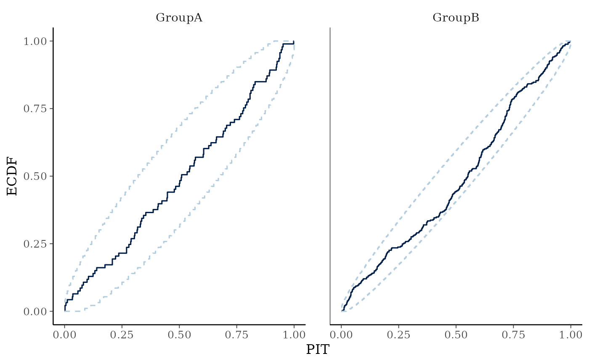
# }
# \donttest{
# don't need to only use small number of rows for ppc_violin_grouped
# (as it pools yrep draws within groups)
color_scheme_set("gray")
ppc_violin_grouped(y, yrep, group, size = 1.5)
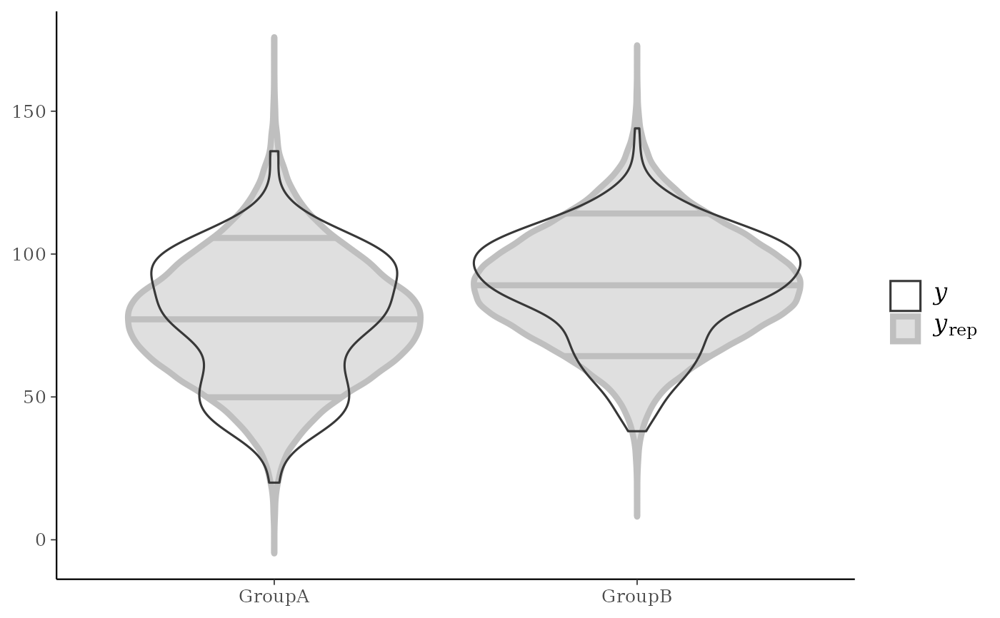
ppc_violin_grouped(y, yrep, group, alpha = 0)
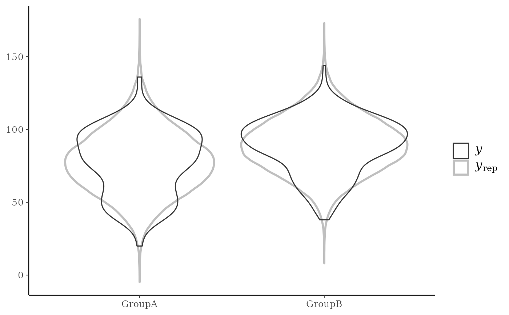
# change how y is drawn
ppc_violin_grouped(y, yrep, group, alpha = 0, y_draw = "points", y_size = 1.5)
ppc_violin_grouped(y, yrep, group,
alpha = 0, y_draw = "both",
y_size = 1.5, y_alpha = 0.5, y_jitter = 0.33
)
# }
# \donttest{
# PIT-ECDF plots of the PIT values by group
# with 99% simultaneous confidence bands.
ppc_pit_ecdf_grouped(y, yrep, group=group, prob=0.99)
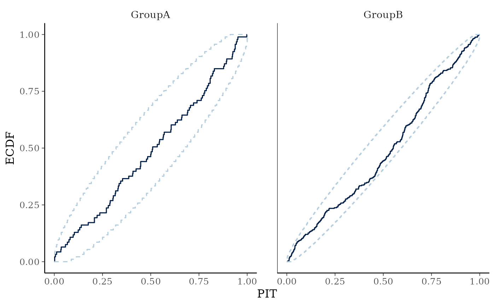
# }
# \donttest{
# don't need to only use small number of rows for ppc_violin_grouped
# (as it pools yrep draws within groups)
color_scheme_set("gray")
ppc_violin_grouped(y, yrep, group, size = 1.5)
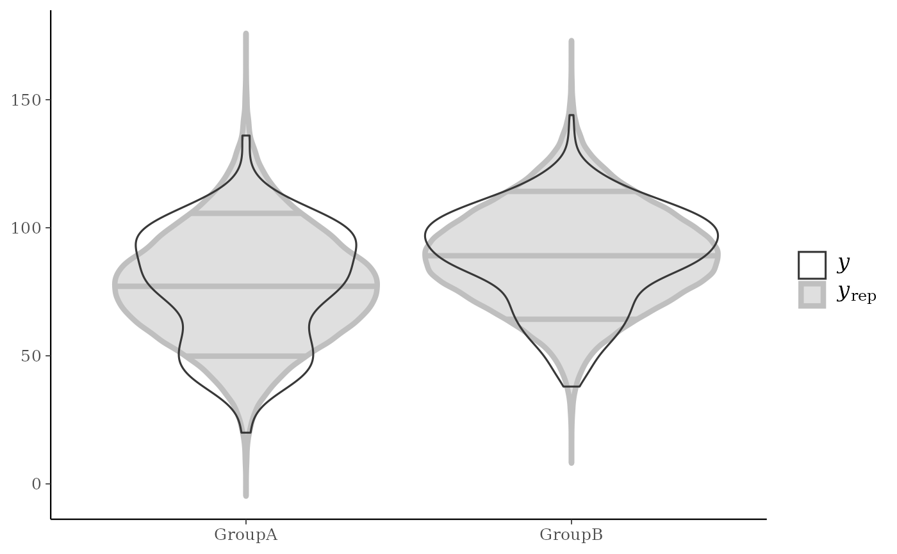
ppc_violin_grouped(y, yrep, group, alpha = 0)
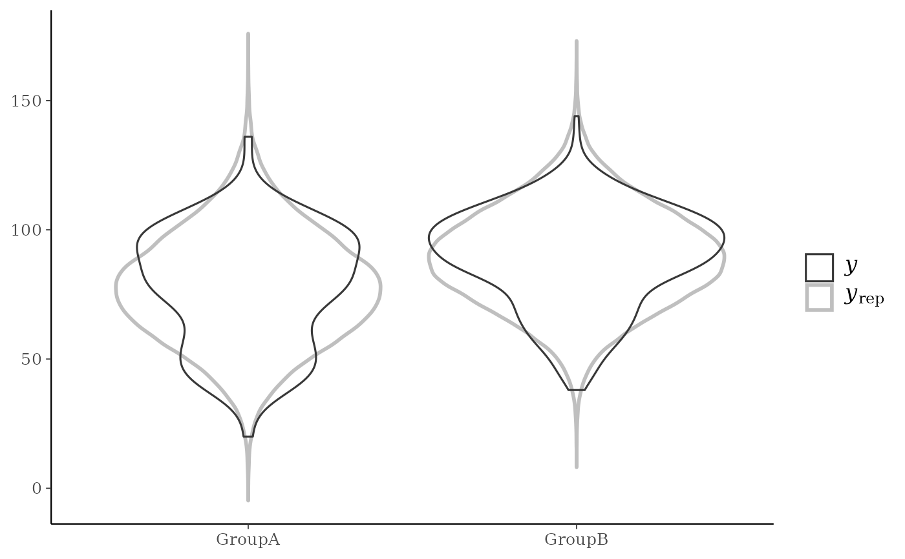
# change how y is drawn
ppc_violin_grouped(y, yrep, group, alpha = 0, y_draw = "points", y_size = 1.5)
ppc_violin_grouped(y, yrep, group,
alpha = 0, y_draw = "both",
y_size = 1.5, y_alpha = 0.5, y_jitter = 0.33
)
# }